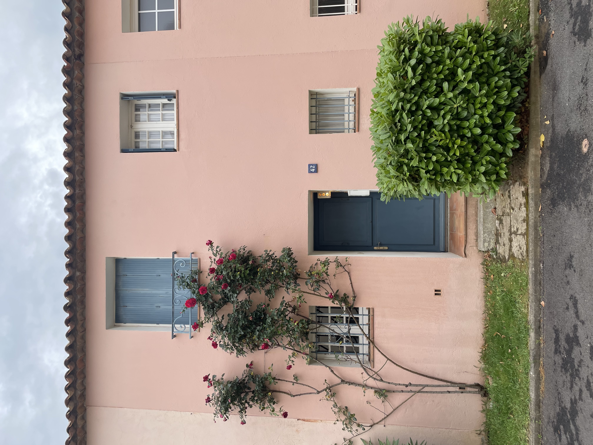
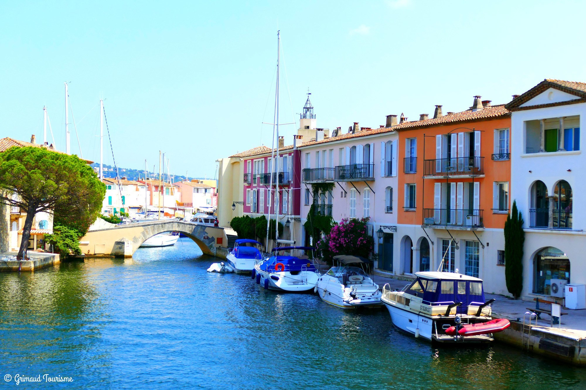

Situé au cœur de la cité lacustre de Port Grimaud, ce logement exceptionnel allie charme provençal et accès direct à la mer. Idéalement placé au 42 Rue de l'Éperon, il offre une vue imprenable sur les canaux, un cadre paisible, et un accès privilégié à toutes les commodités locales.
Le logement bénéficie également d’un garage privé situé à 200 mètres de la maison, offrant un stationnement sécurisé dans le cadre paisible de Port Grimaud. La sécurité est une priorité à Port Grimaud, avec une barrière à l’entrée et des gardes 24h/24, garantissant un environnement calme et protégé. De plus, vous pourrez profiter du service de navette en coche d’eau, un transport public sur les canaux, pour rejoindre facilement les deux plages de Port Grimaud. Le village se situe à seulement 12 minutes en voiture de Saint-Tropez, au fond de la magnifique baie de Saint-Tropez, offrant un accès rapide à l'une des destinations les plus prisées de la Côte d'Azur.
Nous sommes disponibles pour toute demande et nous ferons notre possible pour vous fournir une réponse rapide et détaillée.
Caractéristiques principales :
Superficie : Un espace de 85 m² lumineux et confortable, aménagé pour accueillir famille ou amis.
Extérieur : Une belle terrasse avec vue sur le canal, parfaite pour vos repas en plein air ou moments de détente au bord de l’eau.
Amarre privée : Profitez d’une amarre directement accessible depuis le logement, idéale pour les amateurs de navigation.
Proximité : À quelques pas des plages, restaurants, et commerces, tout en restant dans un cadre calme et sécurisé.
Ce logement est une invitation à vivre l’art de la Dolce Vita, entre terre et mer. Que ce soit pour un séjour de vacances ou pour profiter toute l’année, il vous offre un cadre unique dans l’une des plus belles destinations de la Côte d’Azur.
L'entrée de la maison, donnant sur la rue


D'autres photos de Port-Grimaud.
Le point rouge indique l'emplacement de la maison. Le point jaune indique Saint-Tropez.
.jpg)

.jpg)